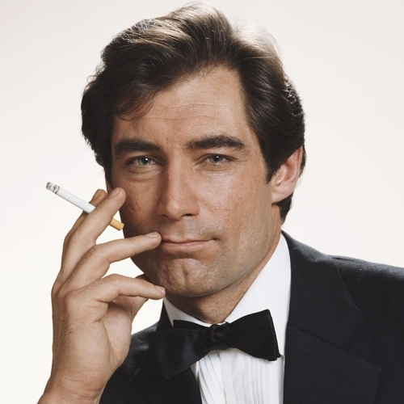

Timothy Dalton
Audience Rating:
Opinion Rating:
The Living Daylights (1987)

Plot
British secret agent James Bond helps KGB officer Georgi Koskov defect during a symphony performance. During his debriefing, Koskov reveals that a policy of assassinating defectors has been instated by new KGB head Leonid Pushkin. But as Bond explores this threat, a counterplot surfaces, involving a shady American arms dealer and a pair of Russian assassins, Necros and Kara Milovy.
Rating
Rotten Tomotatoes
IMDb
Opinion
Pretty Good
After Roger Moore retired from being James Bond, Timothy Dalton takes his place to become Bond. Dalton's approach as Bond in this movie is seriously great. The dark and gritty version of Bond is a breath of fresh air. The plot is very compelling in the beginning. This movie could have gotten 9/10 if the ending did not become slow and sort of uninteresting. I will say that the fight scene in the plane is amazing, so that somewhat fixes the problem.License to Kill (1989)

Plot
James Bond adventure in which 007 relinquishes his licence to kill, disobeys his orders and goes on a mission of revenge when his best friend's wife is killed by a drug baron. A beautiful CIA pilot flies him to Sanchez's South American headquarters where, disguised as a hit man, Bond is hired by the villainous drug dealer.
Rating
Rotten Tomotatoes
IMDb
Opinion
Really Good
When compared to other films, License to Kill is legitimately one of the top 5 best James Bond films ever produced. It is so dark and Bond actually sabotages the villian's entire operation by acting like a real spy. If this film was not released at the worst time possible (because it came out along with other smashing hit movies), License to Kill could have had one of the best Bond ratings ever. It is very unfortunate that this was Timothy Dalton's last film because he was faithful to Ian Fleming's James Bond in the novels and had a dark, gritty touch to Bond.